In the years 1909-1915 (long before the advent of color photography), Russian photographer Sergei Prokudin-Gorskii set about documenting his homeland using a brand new photography technique which produced three grayscale negatives, one for each RGB color channel. In the century since these photos were taken, the Library of Congress has reproduced the original images by hand using computer image-editing technology. While we aren't hoping to recreate exactly the steps taken by the Library of Congress, we want to see how well a computer does when instructed to recreate the images automatically
The main challenge we are tackling here is that of aligning the three negatives together. I received the negatives as they were scanned in, in a single vertical strip. We naively divide the strip into three equal-sized squares to isolate the three negatives and align them from there. We accomplish this alignment by comparing the L2 Norm of two color channels at a time across different (x,y) offsets. There are also a number of techniques we use to improve this algorithm: image pyramids, cropping, and edge detection.
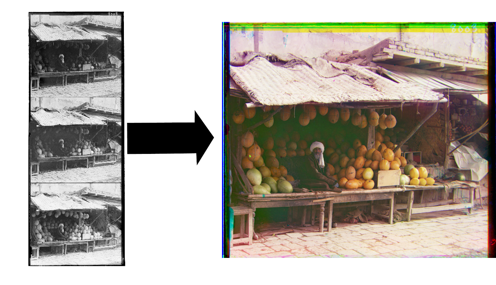The algorithm I use involves creating an image pyramid that scales the images down until they are under 15px on a side. When they are this small it is easy to search every possible offset combination for the lowest L2 Norm. After this layer of search, we revisit the scaled up images using the displacement vector from the smaller images as a guide to narrow down our search options until we return to the original-scaled images. Below are pictured the given example images after this algorithm has been run on them with mouseover text showing the offset vectors in (row, col) form.
To see final results, scroll to the "Edge Detection" section.
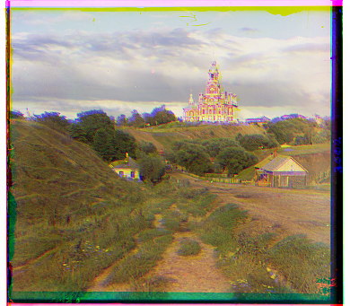, Red:(117, 1)")
, Red:(7, 1)")
, Red:(14, -1)")
, Red:(6, 3)") 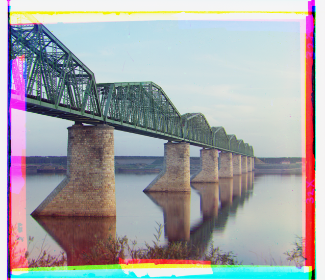
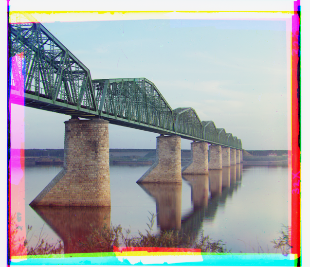
, Red:(129, 2661)") 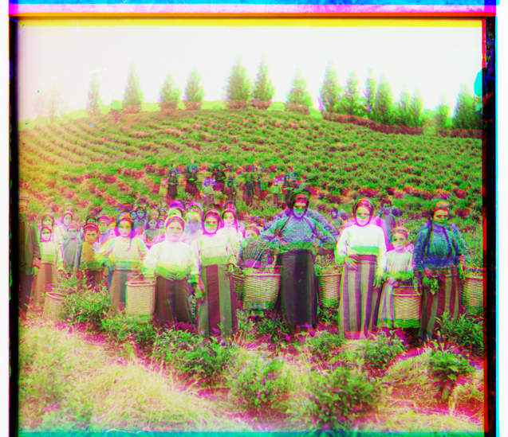
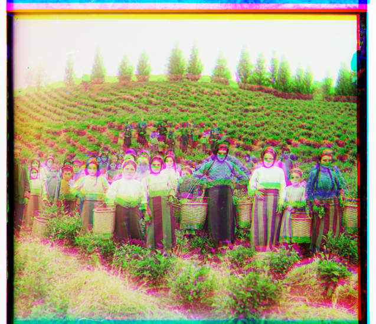
, Red:(107, 1)")
, Red:(131, -5)") 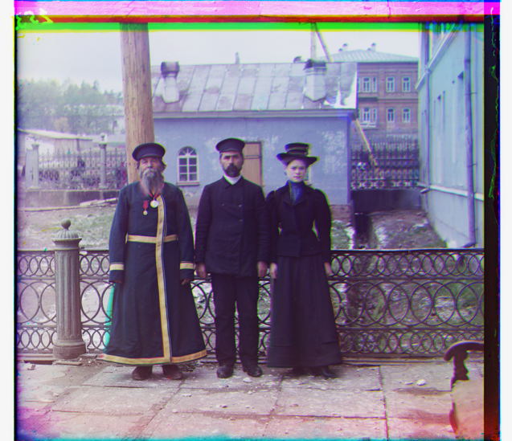
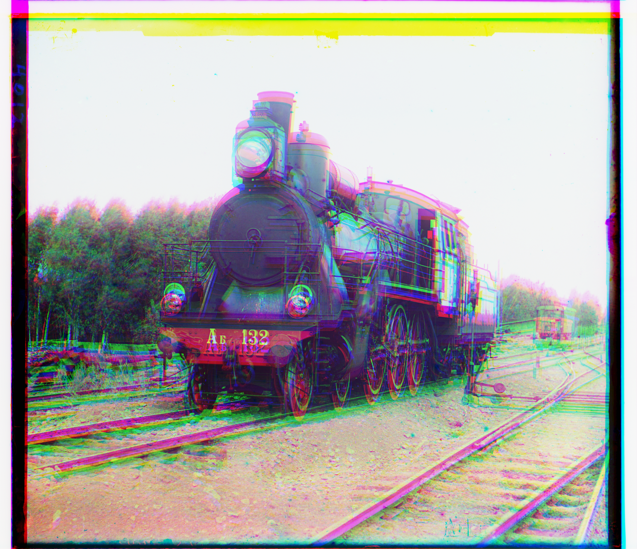
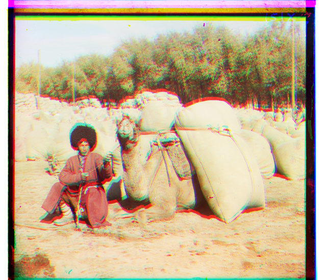
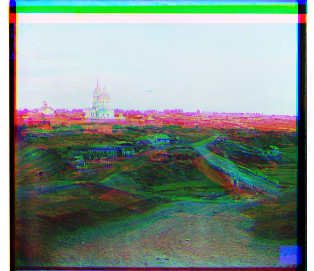
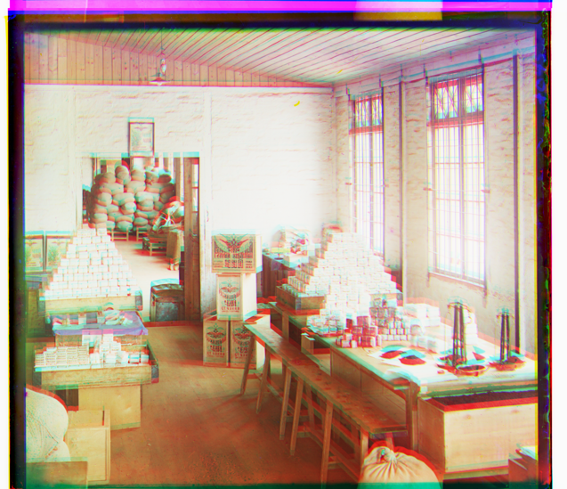
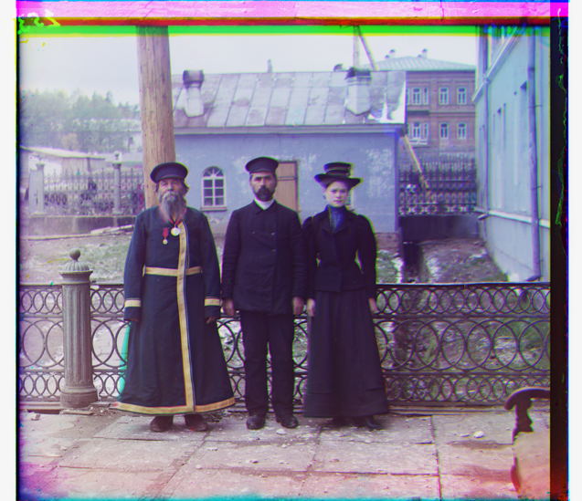
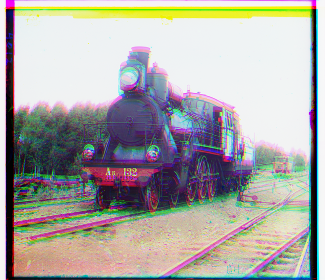
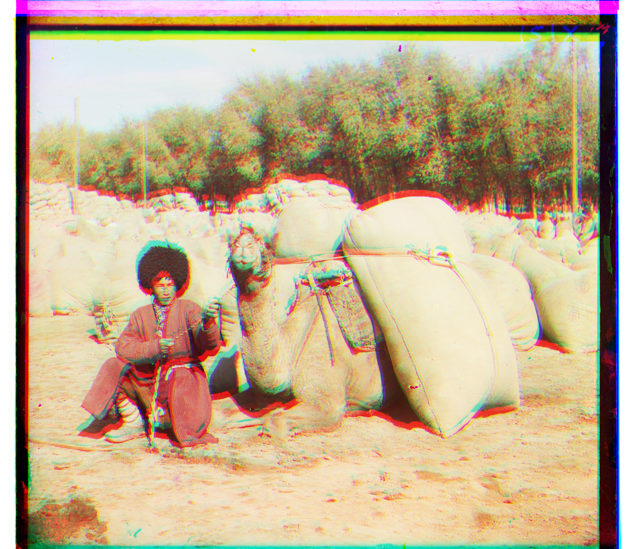
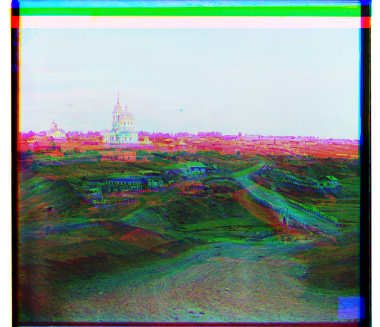
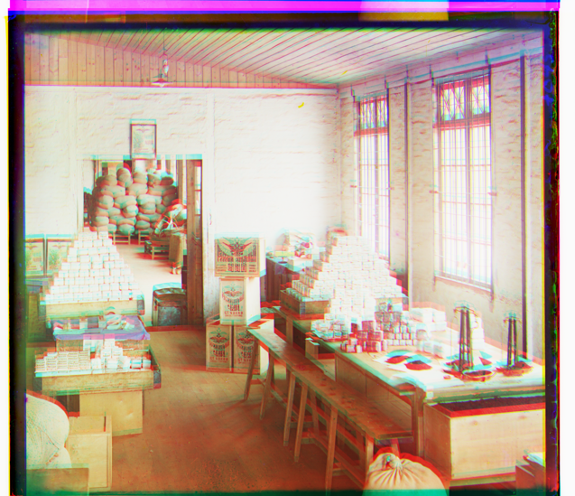
For many of the supplied images, the borders are hugely problematic when calculating the L2 Norm, so we can improve this alignment by cropping off at least part of the borders. This is accomplished through using Matlab's edge function and cropping the images until there is non-zero content on the borders of the picture. While this may (and in many cases does) leave some junk on the borders, in most cases it improves the alignment immensely.
I used edge detection to determine how much to crop off before, and for some problematic images, I also used it to calculate the L2 Norm. This allows us to get around the natural differences between intensities on different channels and compare overall shapes instead. Unfortunately, this approach did not solve all my alignment problems, and some of the images still remain unaligned due to random complexity in the edge profiles.
, Red:(8, 3)") 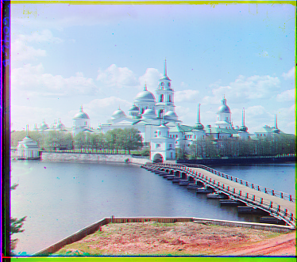
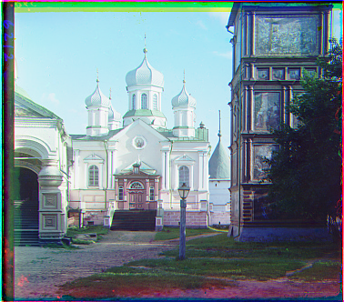
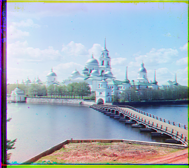
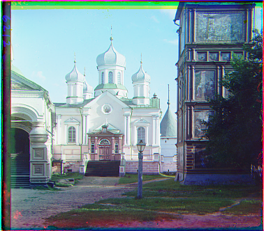
, Red:(3, -2)")
, Red:(2, 0)")
, Red:(3033, -38)")
, Red:(13, 2251)")
, Red:(78, 12)")
, Red:(47, 71)")
, Red:(14, 24)")
, Red:(53, 1)")
, Red:(27, 43)") 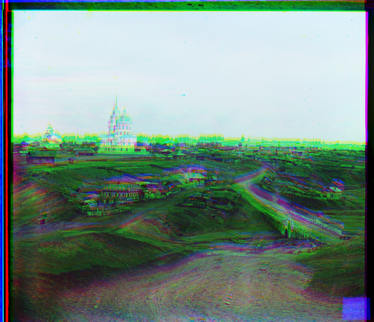
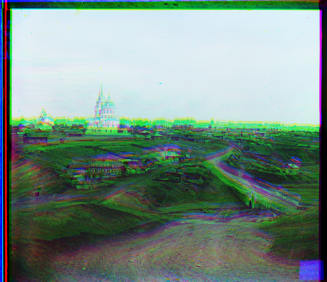
, Red:(-1, 26)")
It is worth noticing that the edge-detecting algorithm did a worse job at aligning "Bridge.tif" and "lady.tif" images. This is because the large spots of damage occuring on the edges of the images that my cropping did not get rid of. These areas of damage create a large difference in the edge profiles of the channels, causing the program to not find the exact alignment. Two other images of note that didn't align properly are "Emir.tif" and "village.tif". In Emir, it is clear that the green channel aligned properly over the blue, but the red is off. This is due to a lack of contrast in the background of the red channel which is present in both the green and blue channels. In the village, the alignment is off particularly in the green channel because of the amount of contrast it contains in the greenery. In both of these cases, higher contrast shows up very strongly in the edge profile, so if one channel has more contrast than another, even if they are aligned properly, they will show a significant difference when taking the L2 Norm of the edge profile.
, Red:(-15, 40)")
, Red:(2, 61)") 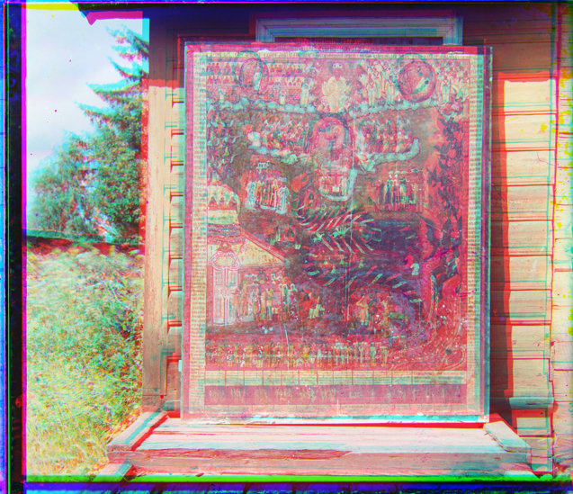
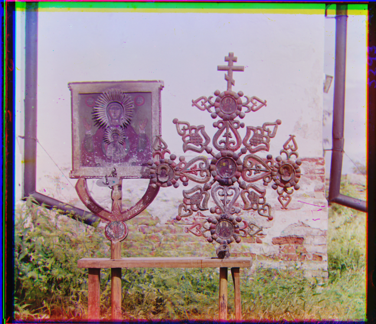
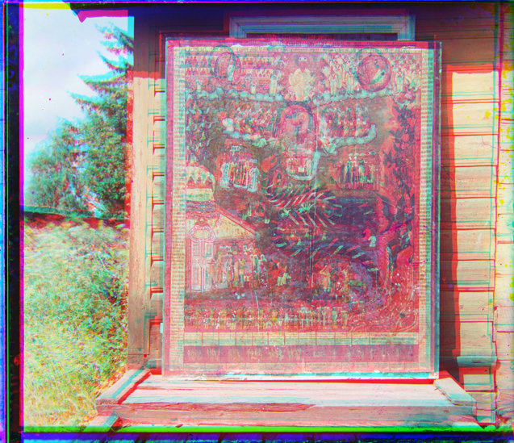
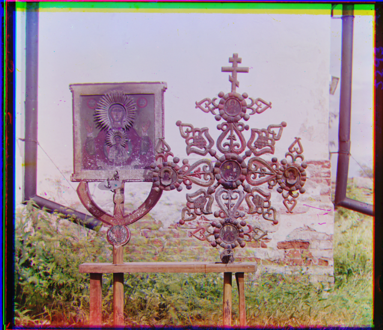